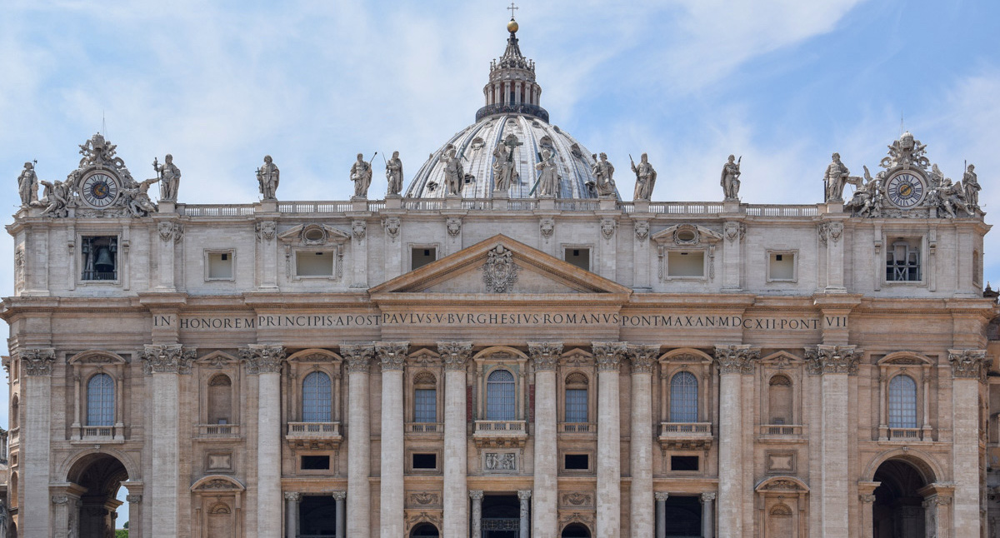
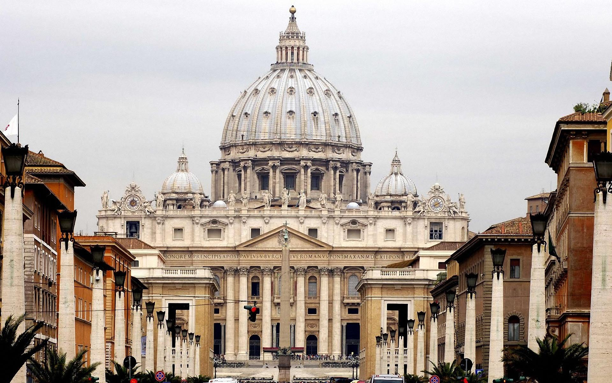
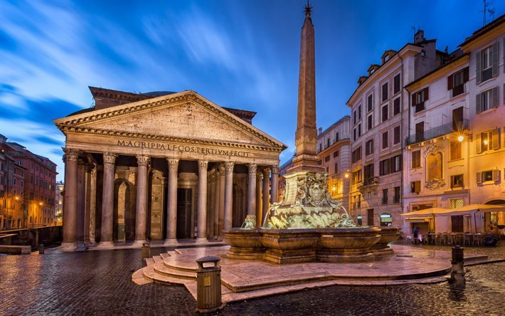
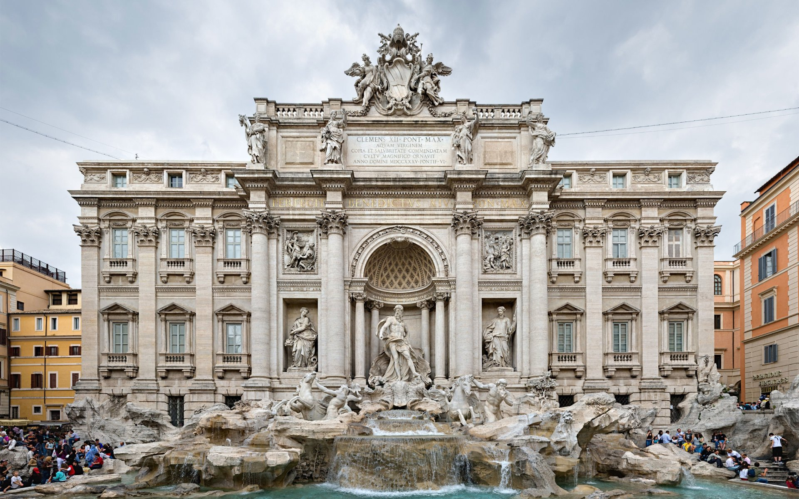
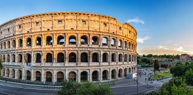

Decouvrez Rome
Capitale de l'Italie, Rome est une grande ville cosmopolite dont l'art, l'architecture et la culture de presque 3 000 ans rayonnent dans le monde entier. Ses ruines telles que celles du Forum Romain et du Colisée évoquent la puissance de l'ancien Empire romain. Siège de l'Église catholique romaine, la Cité du Vatican compte la basilique Saint-Pierre et les musées du Vatican où se trouvent des chefs-d'œuvre tels que la fresque de la chapelle Sixtine, peinte par Michel-Ange.
lieux a decouvrir a Rome

Le musées du Vatican
Les Musées du Vatican se composent de différents musées (pinacothèque, musée Pio-Clementino etc.) et palais (chapelle Sixtine, chambres de Raphaël etc.). La collection est l’une des plus importantes au monde : elle regroupe aussi bien des objets de l’Egypte ancienne et de l’Antiquité classique que des œuvres d’art de la Renaissance, jusqu’au 19ème siècle. Un site est consacré à l’art contemporain et on peut également visiter des constructions papales (des appartements, des bibliothèques, des chapelles).
Basilique St-Pierre
Découvrez la basilique Saint-Pierre sous un nouvel angle en montant au sommet du dôme. Suivez ensuite votre guide pour explorer l'intérieur étonnant et les cryptes du Vatican.La basilique Saint-Pierre (en latin : Sancti Petri et en italien : San Pietro in Vaticano) souvent appelée Saint-Pierre de Rome est l'édifice religieux le plus important du catholicisme. Elle est située au Vatican, sur la rive droite du Tibre, et sa façade architecturale s'ouvre sur la place Saint-Pierre.
Elle a été construite là où, selon la volonté de l'empereur Constantin Ier, les premiers pèlerins venaient rendre un culte à saint Pierre à l'emplacement du cirque de Caligula et de Néron.

Pantheon de Rome
Explorez l'impressionnant Panthéon de Rome et profitez des commentaires perspicaces de votre audioguide. Découvrez son histoire fascinante et sa conversion de temple païen en une église chrétienne.À l’origine, le Panthéon était un temple dédié à toutes les divinités de la religion antique. Il fut converti en église au viie siècle par le pape Boniface IV et aujourd'hui elle est la basilique de la Sainte Vierge et de tous les Martyrs. C’est le plus grand monument de la Rome antique qui nous soit parvenu en état pratiquement intact, du fait de son utilisation ininterrompue jusqu'à nos jours. Il a donné son nom à un quartier de Rome.


Fontaine de Trevi
Explorez l'une des principales attractions de Rome avec un guide expert. Visitez la fontaine de Trevi et découvrez qu'elle est plus que ce que l'on croit, puis visitez les ruines de l'ancien aqueduc à 9 mètres sous terre.La fontaine de Trevi est un exemple de la perpétuation du style baroque dans la Rome du xviiie siècle, par son mélange des effets (elle joue à la fois sur l'architecture, la sculpture et le son), sa monumentalité (elle est structurée par quatre colonnes d'ordre colossal) et sa référence à la fontaine des Quatre-Fleuves de la piazza Navona par Le Bernin.
resumée sur rome
l'Italie. Située au centre-ouest de la péninsule italienne, près de la mer Tyrrhénienne, elle est également la capitale de la région du Latium. En 2019, elle compte 2 844 395 habitants établis sur 1 285 km2, ce qui fait d'elle la commune la plus peuplée d'Italie et la troisième plus étendue d'Europe après Moscou et Londres. Son aire urbaine recense 4 356 403 habitants en 2016. Elle présente en outre la particularité de contenir un État enclavé dans son territoire : la cité-État du Vatican (Stato della Città del Vaticano), dont le pape est le souverain. C'est le seul exemple existant d'un État à l'intérieur d'une ville.